San Pedro de Atacama is one of those places that almost everyone underestimates before arriving.
On a map, it looks like a small desert town in northern Chile, not far from Calama. Many travelers see it more as a convenient base than as a destination in its own right.
People book two nights: see the desert, visit Valle de la Luna, wake up before sunrise for the El Tatio geysers, then continue on to Santiago, Patagonia, or across the Andes toward Bolivia.
And then they arrive.
The streets are dusty and unpaved. The houses are low and earth-colored. The air is so dry that even your skin feels different by evening. During the day, the sun is harsh and almost unforgiving, but temperatures drop quickly after sunset.
Tours begin before dawn. Restaurants fill slowly, closer to nightfall. People return from lagoons, salt flats, canyons, and volcanic plateaus covered in dust, tired, with cracked lips and a strange sense of mental clarity that seems to exist only in extremely dry, high-altitude places.
San Pedro sits at roughly 2,500 meters above sea level in one of the most unusual desert regions in South America.
It is not a resort town, nor does it function as an easy city break. Life follows a different rhythm here: early departures, long horizons, sleepy afternoons, cold evenings, and the feeling that beyond the next bend the desert will become something entirely different again.
That is why people come for two days and stay for a week.
The Town Is Only the Starting Point
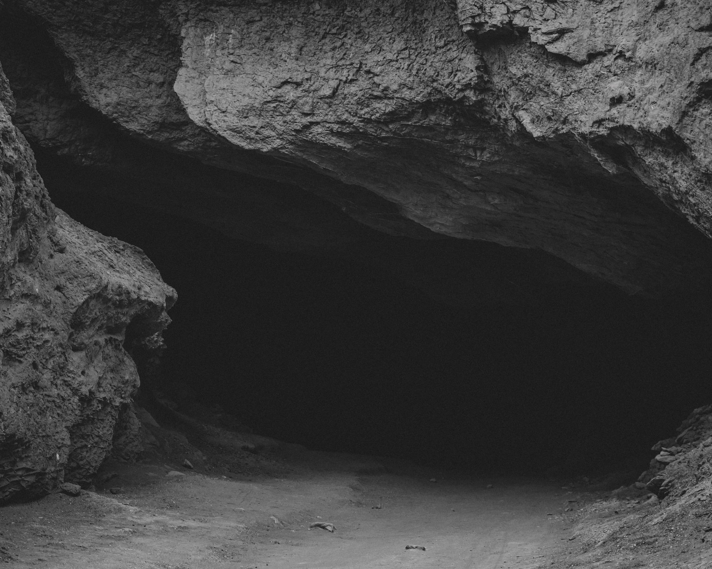
San Pedro de Atacama itself is very compact.
The center can easily be explored on foot: adobe buildings, small cafés, tour agencies, restaurants, shops, and endless conversations between travelers about where to go tomorrow.
But people are not staying because of the town itself.
They stay because of the scale of what begins immediately beyond it.
Within a short distance are completely different landscapes: salt flats, dunes, volcanic slopes, high-altitude lagoons, canyons, hot springs, stargazing sites, and habitats where flamingos live.
Valle de la Luna is only about 15 kilometers from town. You literally leave San Pedro and soon find yourself among salt formations, wind, and rock formations that feel almost extraterrestrial.
That proximity is what makes San Pedro unusual.
In many regions with spectacular nature, reaching each destination requires hours of driving. Here, the town feels like a small human outpost inside a vast high-altitude wilderness.
You sleep in a simple room, eat breakfast in a dusty courtyard, and spend the day among landscapes that seem too large for human presence.
And it becomes addictive.
After Valle de la Luna, someone tells you about Laguna Cejar. After Laguna Cejar, about Piedras Rojas. Then come the Altiplanic Lagoons. Then El Tatio. Then an astronomy tour. Then the Puritama hot springs. Then another free day because the altitude and early mornings start to feel physically demanding.
Suddenly, two days are not enough.
Valle de la Luna Is the First Reason to Stay Longer
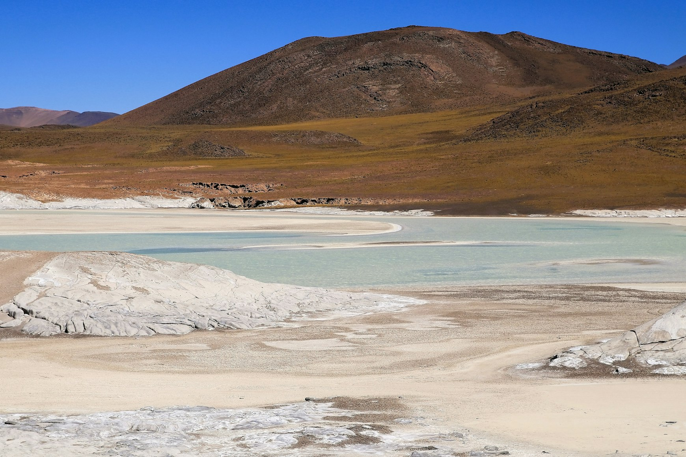
Almost everyone begins with Valle de la Luna, and for good reason.
It is close, dramatic, and visually easy to understand. The landscape belongs to the Cordillera de la Sal, a salt mountain range where wind and time have shaped formations from salt, clay, sand, and stone.
The mistake many visitors make is treating Valle de la Luna as simply a sunset destination.
In reality, it is far more rewarding when explored slowly.
Light changes everything here. During the day, the structure of the terrain becomes visible. As evening approaches, long shadows begin to appear. At sunset, the salt and clay take on warmer colors, though the crowds also increase.
This is where many people first realize something important about Atacama: the desert is beautiful, but it is not gentle.
You need sunscreen, water, appropriate clothing, and enough energy.
This is not a backdrop for photographs.
It is a physically demanding environment.
After Valle de la Luna, many travelers realize they have arrived not for a single excursion but for an entire region that cannot realistically be experienced in a weekend.
El Tatio Sets the Rhythm of the Entire Trip
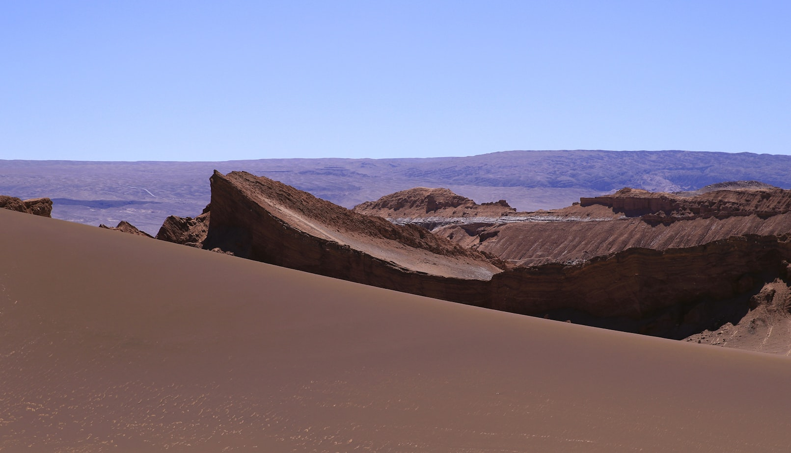
A trip to the El Tatio geysers is often what helps people understand the real rhythm of San Pedro.
The geothermal field sits at approximately 4,300 meters above sea level, which is why tours leave during the night and arrive around sunrise, when steam is most visible in the cold morning air.
This is not a comfortable morning.
It is very cold.
The altitude is immediately noticeable.
Even short walks can feel more difficult than expected.
For this reason, most guides recommend avoiding El Tatio on your first day after arrival and waiting until you have had at least some time to acclimatize in San Pedro.
Yet that challenge is exactly what makes the experience memorable.
You leave town in complete darkness.
The road climbs higher and higher.
Then daylight begins to appear.
Steam rises from the earth.
People become quieter.
The entire landscape feels simultaneously empty and alive.
After El Tatio, many travelers stop trying to see everything.
They begin to understand that San Pedro does not work well with rushing.
The Salt Flats and Lagoons Are Completely Different from One Another
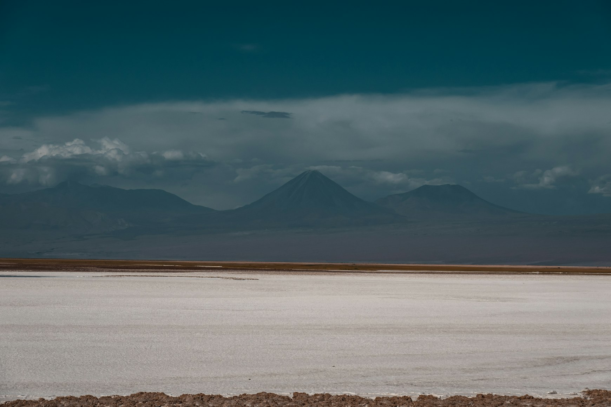
From a distance, an Atacama itinerary can look repetitive: lagoon, salt flat, flamingos, another lagoon.
In reality, these places feel entirely different.
Salar de Atacama appears much harsher than many people expect after seeing photographs of Bolivia.
The surface is not perfectly white and smooth. Salt breaks into sharp formations, the ground is dark, and the overall texture feels rugged and almost alien.
Within this environment are lagoons where flamingos live.
When a guide explains how these birds survive in such conditions, the landscape begins to feel different.
It is no longer just a beautiful place.
It becomes a complex high-altitude ecosystem.
That is why the best Atacama tours are not simply photography trips.
They help visitors understand what they are actually looking at.
The High-Altitude Lagoons Make People Extend Their Stay
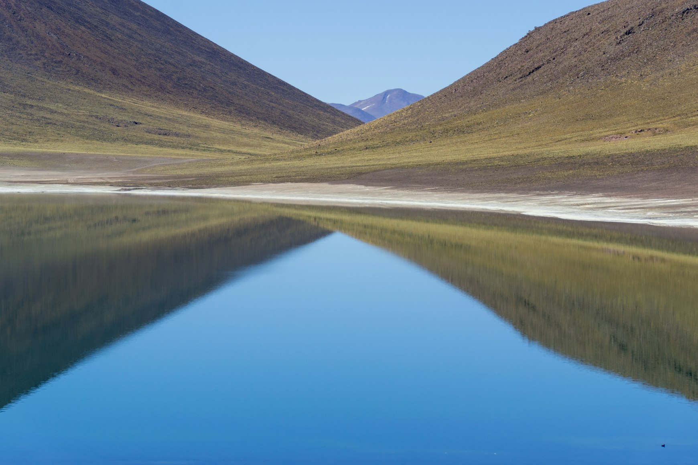
If Valle de la Luna is the first reason people stay longer, the Altiplanic Lagoons are often the reason they completely reconsider their plans.
Miscanti and Miñiques sit much higher than San Pedro itself, surrounded by volcanoes and immense open landscapes.
On the drive there, the desert begins to change.
The Mars-like scenery near town disappears.
In its place come the intense colors of the high plateau: blue water, yellow grasses, white salt, volcanic slopes, and remarkably transparent air.
Here, Atacama stops feeling like a desert in the traditional sense.
It becomes an enormous high-altitude region with multiple climate zones and distinctly different landscapes.
After experiences like these, people begin to understand why San Pedro cannot be treated as merely a stop between flights.
The Sky Is Part of the Journey
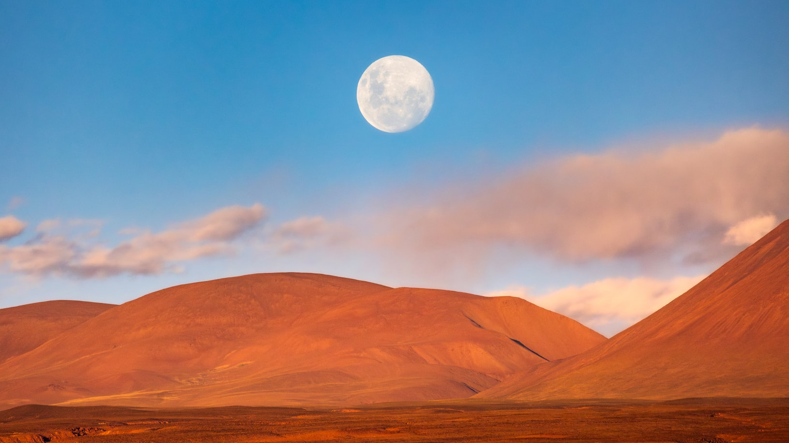
In many destinations, stargazing is simply a pleasant evening activity.
In San Pedro, it becomes one of the defining experiences of the trip.
The Atacama Desert is considered one of the best places in the world for astronomy thanks to its altitude, dry atmosphere, and exceptionally stable skies.
This is why some of the world’s largest astronomical facilities, including ALMA, are located here.
Yet even without visiting a professional observatory, it quickly becomes obvious why the sky matters so much.
On a moonless night, the number of visible stars seems almost unreal.
The Milky Way appears so clearly that many people understand for the first time why travelers are willing to journey into the desert just to look upward.
And this becomes yet another reason why two days are not enough.
If your only night available for an astronomy tour happens to be cloudy or coincides with a full moon, one of Atacama’s most remarkable experiences may simply disappear from the itinerary.
Life Here Is Built Around Contrasts
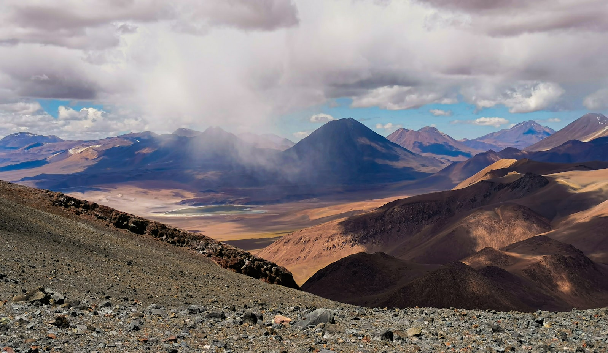
San Pedro attracts people not because it is comfortable in the conventional sense.
It works through contrast.
Morning may begin at five o’clock in freezing darkness on the way to the geysers.
By midday, the sun becomes so intense that the streets empty.
Many people rest in the afternoon because altitude, dry air, and early departures accumulate quickly.
By evening, the town comes alive again.
Restaurants fill.
Travelers return from tours.
The cold returns.
And this rhythm changes the way travel feels.
You stop trying to fill every minute.
You realize that a free day is not wasted time but an important part of the Atacama experience.
What a Week in San Pedro Feels Like
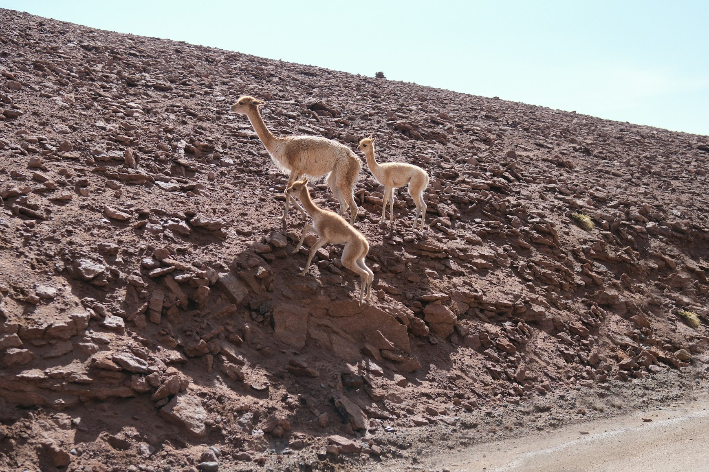
A week here does not feel like a long vacation spent in a single place.
Instead, it feels like a gradual immersion into an entire region.
Every day reveals a different side of Atacama because the desert itself constantly changes: altitude, temperature, colors, terrain, and even light all vary dramatically across the landscape.
The first days are usually slower.
People adjust to the dry air and altitude, explore the town, visit Valle de la Luna, or travel to lagoons near the salt flats.
Then come the higher-altitude excursions: El Tatio, the Altiplanic Lagoons, and Piedras Rojas.
Between the early departures are slow evenings, astronomy tours, hot springs, late dinners, and days with no schedule at all.
That balance is what makes San Pedro special.
If you try to fit everything into two days, the region becomes a checklist of attractions.
Stay longer, and you begin to feel what it is actually like to live inside the desert rather than simply move between points on a map.
The Town Eventually Becomes Part of the Experience
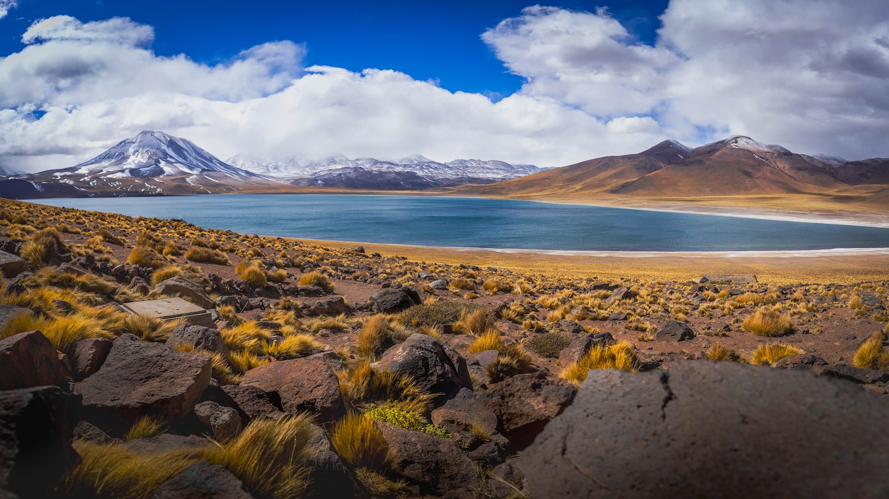
Many people use San Pedro simply as a place to sleep between tours.
But the town has its own personality.
Its value lies in its restraint.
There is no feeling of a large tourist center.
Everything is low-rise, dusty, earth-colored, and human in scale.
The central square, old adobe walls, small courtyards, dogs sleeping in the dust, bicycles leaning against walls, conversations after sunset — all gradually become part of the atmosphere.
San Pedro does not look perfect.
And that is exactly why it works.
Altitude Affects Everything
The most common mistake visitors make is not choosing the wrong excursion.
It is ignoring the altitude.
The town itself already sits at approximately 2,500 meters.
Many tours climb much higher.
The body tires more quickly, sleep quality may decline, and recovery takes longer.
Atacama does not require athletic ability.
But it does require respect for your physical condition.
The best trips are the ones that leave room for rest.
When to Visit San Pedro de Atacama
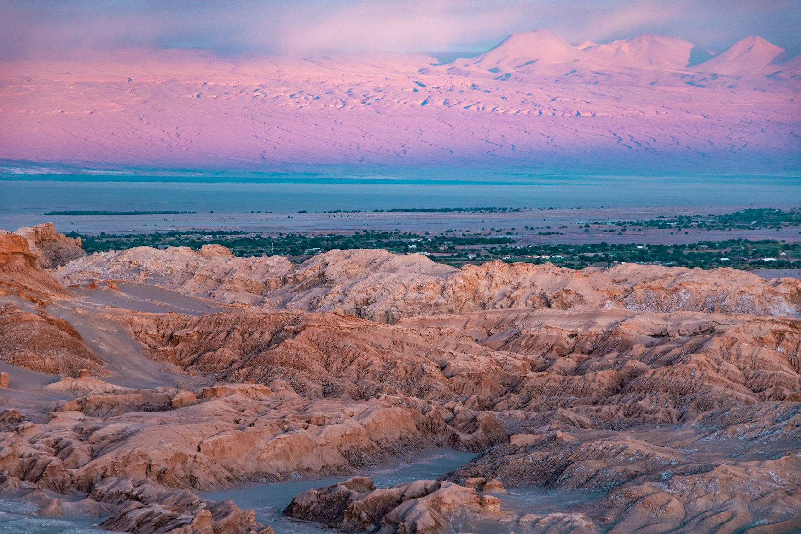
San Pedro can be visited year-round, but the experience changes significantly with the seasons.
From April through October, temperatures are generally cooler and skies are often clearer, making this period especially good for astronomy.
Winter nights can be extremely cold.
Summer is warmer and attracts more visitors.
Some high-altitude areas may also experience weather changes related to seasonal precipitation in the Andes.
Most importantly, travelers should understand that even during warmer months, nights can still be cold.
Atacama is a place of dramatic temperature swings.
How Many Days Do You Need in San Pedro de Atacama?
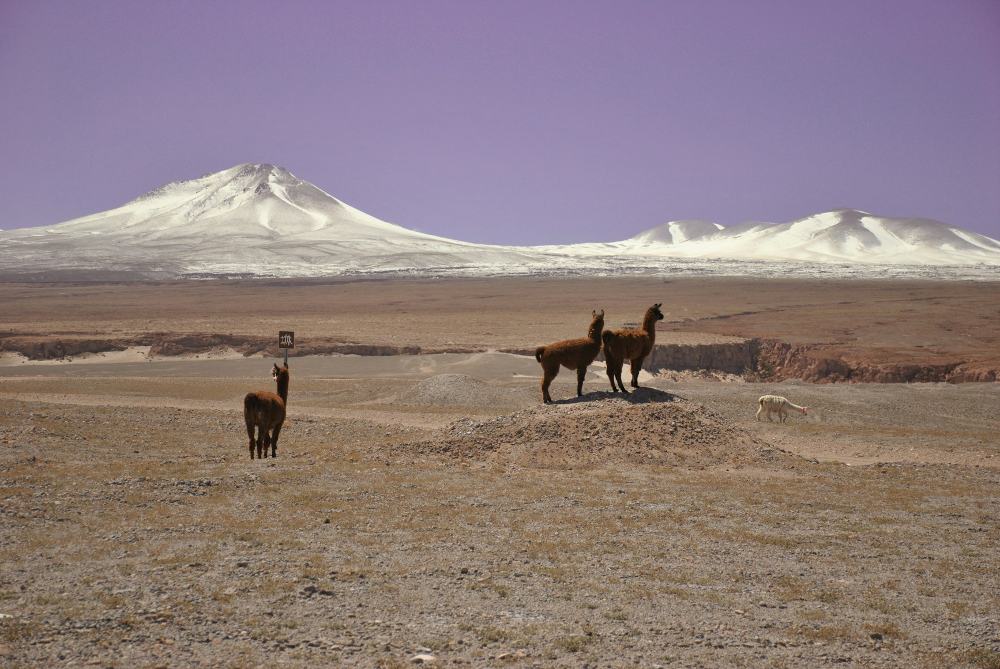
Two nights provide only a surface-level impression.
You will have enough time for Valle de la Luna and one major excursion, but the region will feel like the beginning of something rather than a complete experience.
Three to four nights are significantly better.
There is enough time for lagoons, El Tatio, and an astronomy tour.
Five to seven nights offer the best rhythm for travelers interested in atmosphere, photography, nature, geology, and the feeling of a place rather than simply checking attractions off a list.
Extra days rarely feel unnecessary here.
They fundamentally change the quality of the experience.
Why People Stay Longer Than Planned
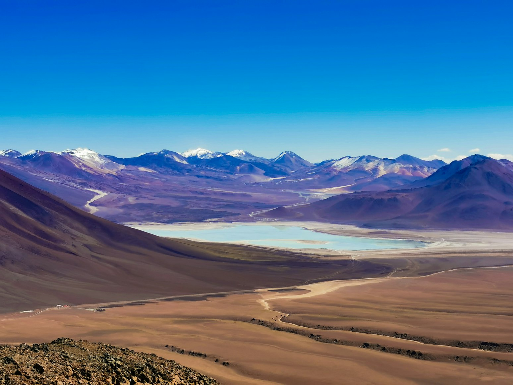
People stay longer in San Pedro de Atacama because the place is built around curiosity.
Every excursion reveals a different version of the desert.
Every conversation adds another location to the map.
Every early morning makes you promise yourself a quiet day.
And every quiet day somehow ends with the same thought:
What should I see tomorrow?
This is not a destination that impresses through luxury, nightlife, or endless entertainment.
It works through scale, silence, altitude, stars, cold, wind, and the feeling of vast open space.
San Pedro de Atacama is a rare type of travel destination: a small desert town where life revolves around sunrise tours, cold nights, dusty roads, and the realization that a desert can be far more complex and diverse than it appears before arrival.
That is why people fly here for two days.
And then start changing their return flights.